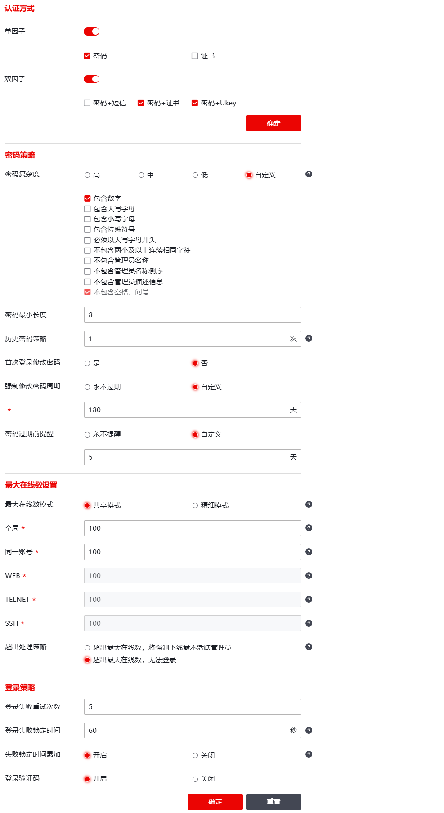

管理员账户能够对NGFW进行管理与配置，因此为保证NGFW的安全性，管理员的登录会话必须设置一定的安全保护机制以防止非法人员窃取管理员账号。具备管理员模块读写权限的管理员可以通过配置管理员账号的密码复杂度、允许最大登录失败次数、最大在线数等账号保护机制，提高管理员账号的安全性。
| 步骤1 | 选择 ，如下图所示。 |

| 步骤2 | 设置管理员账号安全保护机制。 |
1）在设置管理员账号安全保护机制时，各项参数的具体说明如下表所示。
|
参数 |
说明 |
|---|---|---|
认证方式 |
单因子/双因子 |
设置管理员登录NGFW允许的认证方式。包括单因子（密码/证书）、双因子（密码+短信、密码+证书/密码+Ukey）。 |
密码策略 |
密码复杂度 |
为适应管理员密码安全性、易用性的不同需求，NGFW提供密码复杂度的设置功能。 设置添加管理员时口令密码的复杂程度。可选项：高、中、低、自定义。 说明： 高：密码长度不小于16个字节，必须包含大小写字母、数字和特殊英文字符，不包含自身信息(管理员名、描述)和空格、问号； 中：密码长度不小于12个字节，必须包含大小写字母和数字，不包含空格、问号； 低：密码长度不小于8个字节，不包含空格、问号； 自定义：可勾选密码需要包含的内容，制定密码复杂程度。 |
历史密码策略 |
修改密码时，新密码不能与历史密码相同，历史密码的次数由配置决定。 |
|
首次登录修改密码 |
为适应管理员密码安全性、易用性的不同需求，NGFW提供首次登录强制修改密码的设置功能。 勾选复选框表示首次登录系统会强制用户修改密码。 |
|
强制修改密码周期 |
选择是否强制定期修改密码，可选择永不过期或自定义密码修改期限。单位：天；范围：1-365。 |
|
密码过期前提醒 |
若选择了强制定期修改密码，可自定义设置密码过期前提醒。单位：天；范围：1-30。 |
|
最大在线数设置 |
最大在线数模式 |
选择最大在线数模式。 说明： 共享模式：只允许修改全局最大在线数与同一账号最大在线数，WEB/SSH/TELNET最大在线数与全局最大在线数相同， 精细模式：全局、同一账号、WEB、SSH、TELNET最大在线数均可修改 |
全局 |
设置所有账号所有管理方式总计允许的最大在线连接数。单位：个；取值范围：1-128；默认值：100。 |
|
同一账户 |
设定使用同一管理员账号同时管理NGFW的最大连接数。单位：个；取值范围：1-128；默认值：10。 |
|
WEB |
设置管理员使用WEBUI界面方式同时管理NGFW的最大连接数。单位：个；取值范围：1-128；默认值：10。 |
|
TELNET |
设置管理员使用Telnet方式同时管理NGFW的最大连接数。单位：个；取值范围：1-128；默认值：10。 |
|
SSH |
设置所有管理员使用SSH方式同时管理NGFW的最大连接数。单位：个；取值范围：1-128；默认值：10。 |
|
超出处理策略 |
设置超出在线登录人数的处置策略。 |
|
登录策略 |
登录失败重试次数 |
设置允许同一管理员连续尝试登录NGFW的最大失败次数。单位：次；取值范围：3-100；默认值：5。 说明： 同一管理员登录失败次数超过最大失败次数后，NGFW的登录界面将被锁定一段时间。 |
登录失败锁定时间 |
设置因管理员超过最大登录失败次数后仍未成功登录的锁定时间。单位：秒；取值范围：30-3600；默认值：60。 |
|
失败锁定时间累加 |
选择是否开启登录失败锁定时间累加功能。 如登录失败后账号锁定时间设置为30秒。第一次登录失败，账号锁定时间为30秒，锁定结束后，第二次登录失败，账号锁定时间为60秒，根据登录失败重试次数累加。 |
|
登录验证码 |
设置是否开启登录界面验证码。勾选复选框表示开启，不勾选复选框表示不开启。 |
2）参数设置完成后，点击【应用】按钮完成账号安全机制的配置。